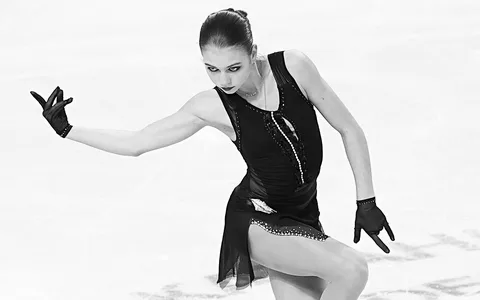
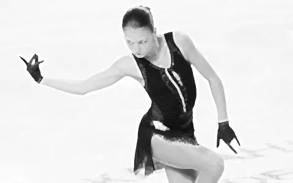
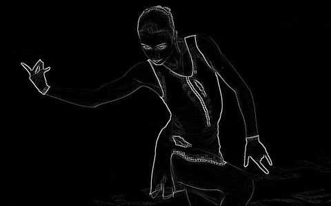
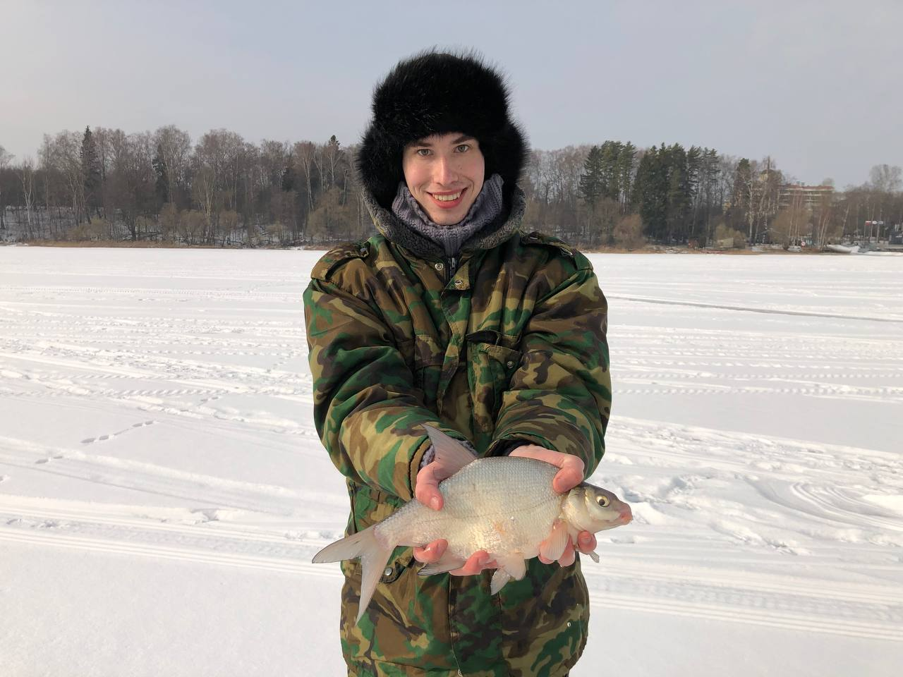
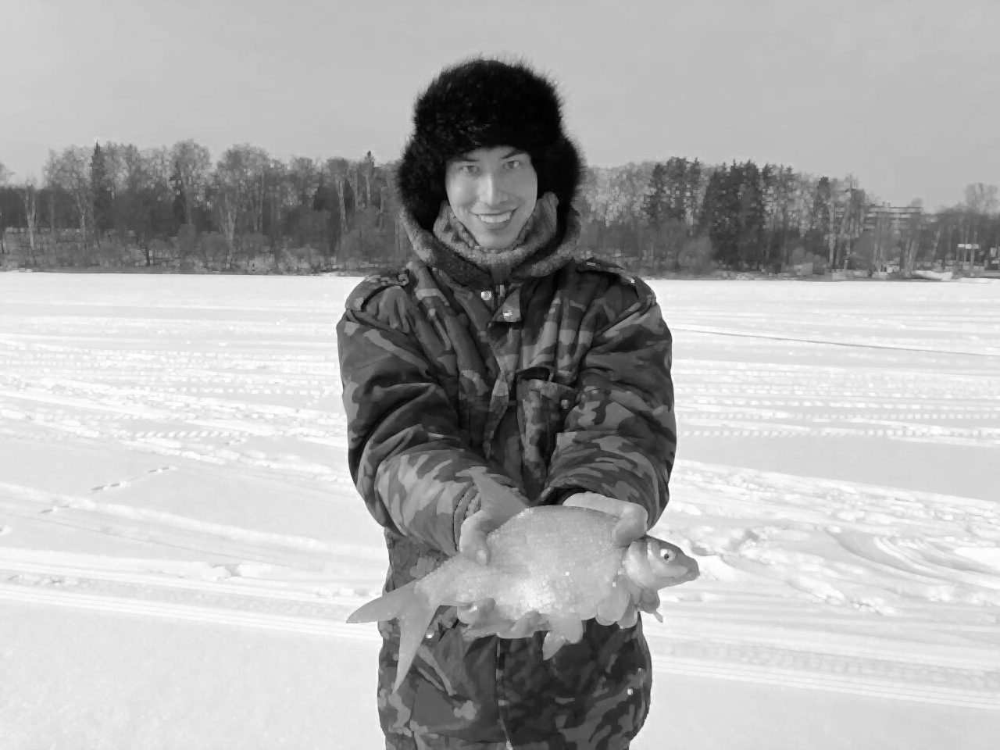
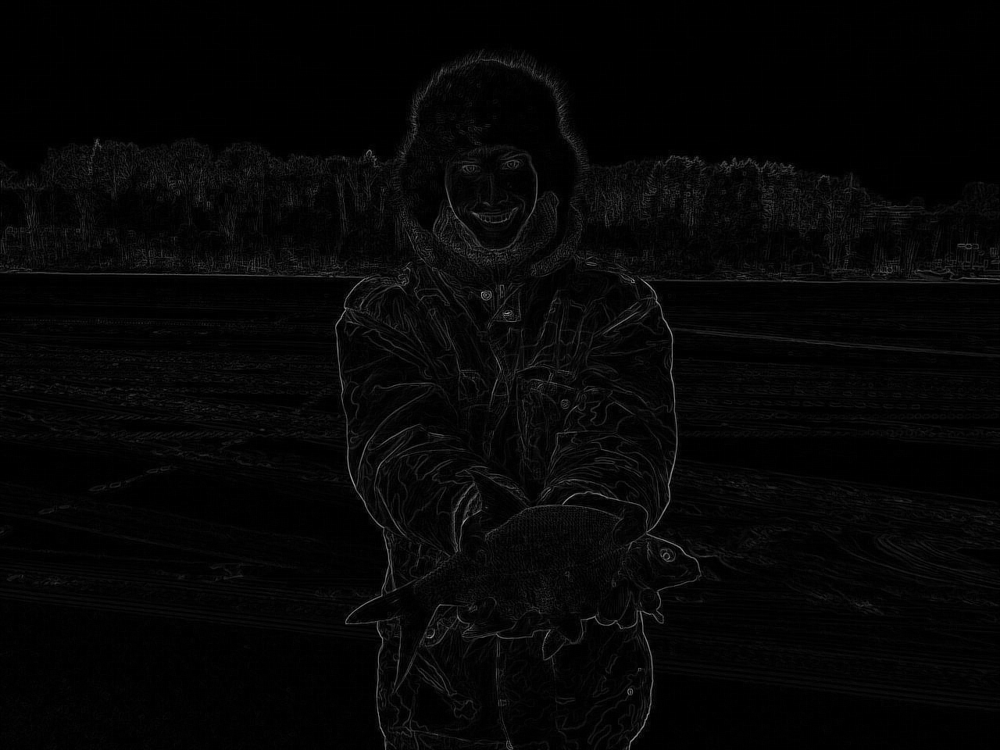

Лабораторная
работа №3. Фильтрация изображений и морфологические операции
Исходное изображение

1.
Отфильтрованное монохромное (полутоновое) изображение

2.
Разностное изображение (монохромный xor или модуль разности для
полутона)

Исходное изображение

1.
Отфильтрованное монохромное (полутоновое) изображение

2.
Разностное изображение (монохромный xor или модуль разности для
полутона)
